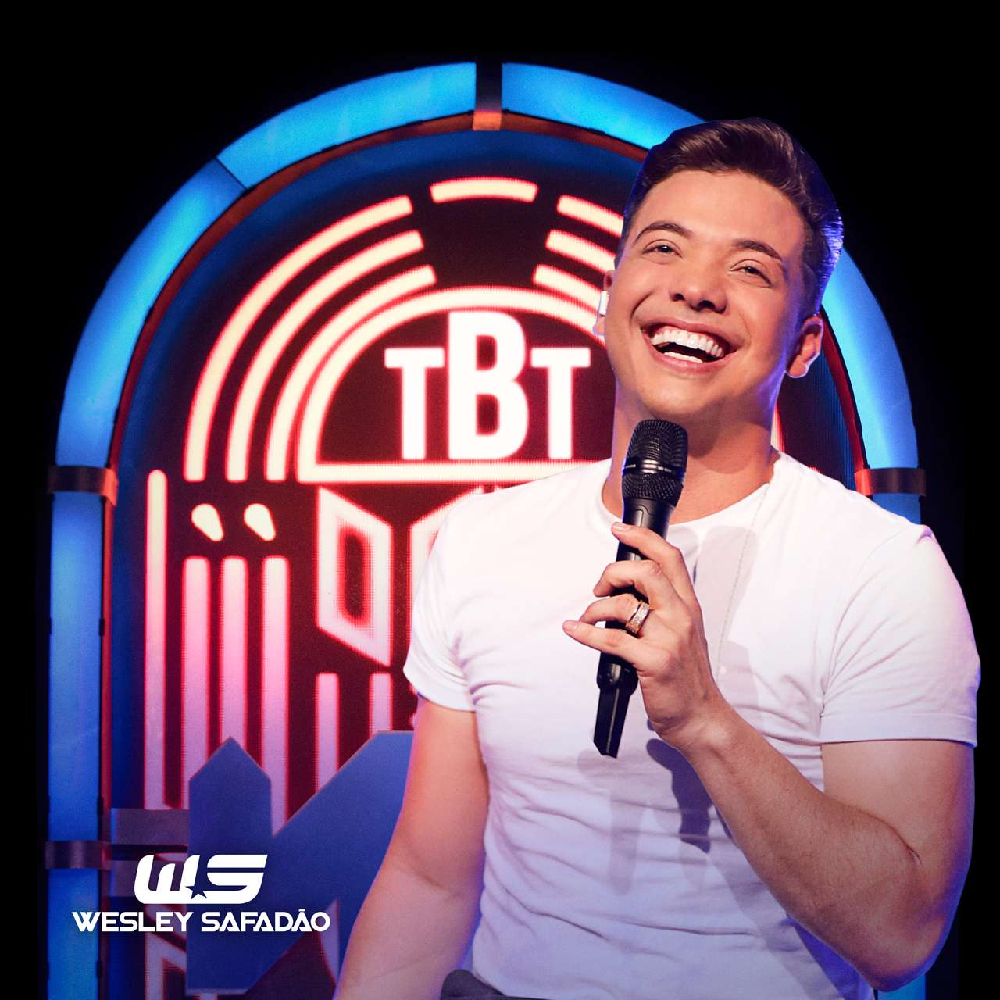
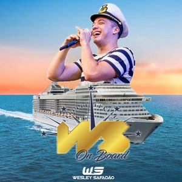

PROJETOS MUSICAIS

Garota Vip
- Os shows do Garota Vip são conhecidos por durarem até o dia nascer, e pela alta carga de energia – no palco, e na plateia. Os óculos de sol são outra marca registrada do festival, que já teve apresentações com mais de oito horas de duração.
- Em 2016, Wesley Safadão desembarca em todo Brasil levando o projeto Garota VIP.
Saiba mais
Garota white
- O projeto “Garota White” que foi idealizado pelo cantor em outubro de 2013, já passou pelas principais capitais do Brasil e convoca os fãs para virem vestidos com a cor branca.
- O projeto “Garota White” que foi idealizado pelo cantor em outubro de 2013, já passou pelas principais capitais do Brasil e convoca os fãs para virem vestidos com a cor branca.
Saiba mais

TBT do Safadão
- O TBT do Safadão é o momento de recordar a carreira e ele promete entregar um show emocionante, relembrando os tempos do Garota Safada até os dias atuais. O setlist da apresentação desta quarta, 20, traz sucessos
- TBT WS é o quinto álbum ao vivo do cantor brasileiro Wesley Safadão, gravado em Fortaleza, no dia 19 de maio de 2019. O álbum foi lançado em 20 de junho de 2019 pela Som Livre nos formatos download digital e streaming.
Saiba mais

Ws On Board
- WS On Board sob o comando de Wesley Safadão, recebe o anfitrião e seus convidados a bordo do navio mais animado do Brasil. São 3 dias e 3 noites de festa, shows incríveis e muita diversão.
- O embarque e desembarque acontecem no porto de Santos/SP nos dias 12 de novembro a 15 de novembro de 2022.
Saiba mais